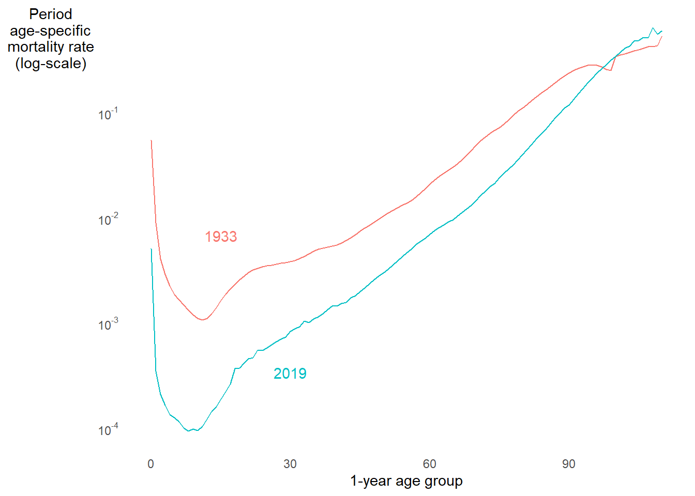

2 Age-specific rates and probabilities
Learning objectives
- Learn the structure of a period age-specific rate
- Understand the consequences of crude rates being a function of rate schedules and age structure
- Standardize crude rates to adjust for differences for in population structure
- Decompose rates and probabilities into components associated with age-specific rates vs. age structure
- Use a Lexis diagram to visualize the person-periods and occurrences applicable to cohorts, periods, ages, and their combinations
- Explain what type of data is required to estimate cohort rates and probabilities from population and occurrence counts
For most human populations, demographic rates vary strongly by age.
Below is the age pattern of mortality from ages 0 to 90 in 9 countries in 202013
Now look at the age pattern of fertility from ages 12 to 55 in 13 countries in 201914

2.1 Period age-specific rates
General definition of a period age-specific rate15:
\[ {}_{n}R_{x}[0,T] = \frac{ \textsf{Number of occurrences in the age range } x \textsf{ to } x + n \textsf{ between time } 0 \textsf{ and } T }{ \textsf{Number of person-periods lived in the age range } x \textsf{ to } x + n \textsf{ between time } 0 \textsf{ and } T } \]
- Mortality pattern plot above shows age-specific mortality rates \({}_{n}M_{x}[0,T]\)
- Birth pattern plot above shows age-specific fertility rates \({}_{n}F_{x}[0,T]\), which we will cover more in week 5
- Interval length \(n\) given in exact years
- Example: \({}_{5}M_{30}[0,T]\) is mortality rate between exact ages \(30.\overline{0000}\) and \(34.\overline{9999}\)
Crude rates as a function of age-specific rates and age structure
Consider crude death rate \(CDR[0,T] = D/N\) measured from death counts \(D\) and mid-period population size \(N\) (which is just an approximation of person years \(PY\):
\[ \begin{align} CDR &= \frac{D}{N} = \frac{\sum_{x=0}^{\infty} {}_{n}D_{x}}{N} = \frac{\sum_{x=0}^{\infty} \frac{{}_{n}D_{x}}{{}_{n}N_{x}}{}_{n}N_{x}}{N} \\ &= \sum_{x=0}^{\infty} \frac{{}_{n}D_{x}}{{}_{n}N_{x}} \cdot \frac{{}_{n}N_{x}}{N} \\ &= \sum_{x=0}^{\infty} {}_{n}M_{x}\cdot {}_{n}C_{x} \\ &= \textsf{Sum over age groups of } \begin{pmatrix} \textsf{Age-specific} \\ \textsf{mortality rate} \end{pmatrix} \times \begin{pmatrix} \textsf{Proportion in} \\ \textsf{age group} \end{pmatrix} \end{align} \]
Points to keep in mind about this equation:
- \({}_{n}C_{x} = {}_{n}N_{x} / N\) is proportion of the total population aged \(x\) to \(x+n\). Because population counts often approximate person-periods (e.g., mid-period counts), \({}_{n}C_{x} = {}_{n}N_{x} / N\) is also an approximation of the proportion of total person-periods lived by person aged \(x\) to \(x+n\).
- \(\sum_{x=0}^\infty {}_{n}C_{x} = 1\), so \({}_{n}C_{x}\) values together define the population’s age structure.
- In practice, you sum up to the oldest age group in the population, so don’t get confused by the use of \(\infty\) in the sum!
- With age intervals of unequal length, \(n\) varies by age group. For notation that allows varying interval length, you can index age groups by \(i\):
\[CDR = \sum_{i}^{\infty} M_{i}\cdot C_{i}\]
- In principal, \(C_i\) could just as easily represent the structure of the population by a variable other than age (e.g., race/ethnicity, gender).
By knowing that principal periods rates are the product of rate schedules and population structure, we can resolve some confusing comparisons in rate between populations, or for the same population at different times.
FOR EXAMPLE
Below are the crude death rates in the U.S. for women in 1933 vs. 201916. CDR is higher in 1933. Makes sense. But 1933 was the height of the Great Depression. I’d expect a bigger gap. WTF?
What do you notice? Tap for answer
Mortality was up to an order of magnitude higher in 1933 than 2019 at nearly all ages. Again, WTF is up with CDR comparison?
What do you notice? Tap for answer
- Population was older in 2019
- Mortality is higher at older ages
- This could explain things

2.2 Age-standardization
Population aging distorts crude death rate comparisons
Question: How can we eliminate the effect of age distribution?
Answer: Age-standardized rates!
Example: Assume that 1933 instead had a 2019 age structure:19
\[CDR^* = \sum_i M_i^{1933} \cdot C_i^{2019}\]
Why not use a 1933 standard? Or average \(C_i\) between 1933 and 2019? Tap for answer
- Choice between 1933 and 2019 is arbitrary, but can largely impact the comparison
- Arguably better to average across age distributions
- But be careful that one extreme age distribution isn’t skewing the average
What do you notice? Tap for answer
- CDR difference is smaller for older 2019 standard than younger 1933 standard
- The cross-period average standardized CDR is between those values
- Standardized differences much larger than un-standardized difference
More generally, for any standard population \(s\) and focal population \(j\), the age-standardized crude death rate (ASCDR):
\[ASCDR^j = \sum_i M_i^{j} \cdot C_i^{s}\] Even more generally, for any rate \(R\) and schedule of age-specific rates \(R_i\):
\[ASR^j = \sum_i R_i^{j} \cdot C_i^{s}\]
And EVEN MORE generally, note again that we can examine the distribution of a population by any discrete variable (e.g., race/ethnicity, marketing channel, employment status, wealth, etc. etc. etc.). Therefore, we can standardize rates by any discrete variable (or even a combination of discrete variables). Indeed, it’s even possible (but really hard) to standardize populations by a continuous variable.
2.3 Decomposition of differences between rates or proportions
As a demographer or data scientist, you’ll get these questions a lot:
- Demography: “How much of the difference between these death rates is due to differences in age distributions?”
- People analytics: “How much of the difference between these turnover rates is due to different tenure distributions?”
- Marketing: “How much of the customer conversion rate between these two lead generating websites is due to a difference in marketing channel?”
One way to answer such questions is with a clever difference decomposition.
Example: Crude death rate difference
\[ \Delta = CDR^B - CDR^A = \sum_i C_i^B \cdot M_i^B - \sum_i C_i^A \cdot M_i^A \] On pg. 28, PHG derive a useful decomposition of this difference:
\[ \begin{align} \Delta &= \sum_i \left(C_i^B-C_i^A\right) \cdot \left[\frac{M_i^B+M_i^A}{2}\right] + \sum_i \left(M_i^B-M_i^A\right) \cdot \left[\frac{C_i^B+C_i^A}{2}\right] \\ &= \begin{pmatrix} \textsf{difference in age} \\ \textsf{composition} \end{pmatrix} \cdot \begin{pmatrix} \textsf{weighted by avg} \\ \textsf{age-specific mortality} \end{pmatrix} \\ &+ \begin{pmatrix} \textsf{difference in} \\ \text{rate schedules} \end{pmatrix} \cdot \begin{pmatrix} \textsf{weighted by} \\ \textsf{average age} \\ \textsf{composition} \end{pmatrix} \end{align} \]
Or, put even more simply:
\[ \Delta = \begin{pmatrix} \textsf{contribution of} \\ \textsf{age composition} \\ \textsf{differences to } \Delta \end{pmatrix} + \begin{pmatrix} \\ \textsf{contribution of} \\ \textsf{rate schedule} \\ \textsf{differences to } \Delta \end{pmatrix} \]
Example: Decomposing the difference in U.S. women’s mortality between 1933 vs. 2019. Below is a table of period age-specific population proportions \(C_i^\textsf{year}\) and mortality rates \(M_i^\textsf{year}\), as well as difference contributions \(\left(C_i^{1933}-C_i^{2019}\right) \cdot \left(M_i^{1933}-M_i^{2019}\right)/2\) and \(\left(M_i^{1933}-M_i^{2019}\right) \cdot \left(C_i^{1933}-C_i^{2019}\right)/2\).
What do you notice? Tap for answer
- Age structure contribution is negative because 1933 population is younger
- Rate schedule contribution is positive because 1933 mortality was higher
The sum of these two contributions yields back the original difference:
\[ \Delta = CDR^{1933} - CDR^{2019} = 1.4 \textsf{ per 1000 women} \]
2.4 The Lexis diagram
KEY CONCEPT
The Lexis diagram visualizes relationships among:
- Age groups
- Cohorts
- Periods
Using a Lexis diagram to find three types of age-specific rate
Before drawing our first Lexis diagram, let’s define three types of rate:
- Period age-specific rates (we already defined these early in the week)
- Cohort age-specific rates
\[ {}_{n}R_{x}^{c} = \frac{ \textsf{Number of occurrences in cohort } c \textsf{ between ages } x \textsf{ and } x + n }{ \textsf{Number of person-periods lived in cohort } c \textsf{ between ages } x \textsf{ and } x + n } \]
- Cohort period rates
\[
R^{c}[0,T] = \frac{
\textsf{Number of occurrences in cohort } c \textsf{ between times } 0 \textsf{ and } T
}{
\textsf{Number of person-periods lived in cohort } c \textsf{ between times } 0 \textsf{ and } T
}
\]
PHG say cohort period rates are “rarely encountered,” but can you think of a good example use case? Tap for answer
DEMOGRAPHY & DATA SCIENCE
Cohort period termination rates
A question I’ve actually heard asked: “What was the termination rate during peak retail season 2020 (October through December) among people hired in the U.S. during the first surge of the COVID-19 pandemic?”
Why doesn’t a cohort period age-specific rate make any sense? Tap for answer
For a particular period, a cohort can’t be any other ages than the ages they were during that period!
Example: Alas, as a member of the 198421 birth cohort, I can’t experience the age of 25 (ah, youth!) during this period of my life (ah, gainful employment!)Below I show you how to find periods, cohorts, and age groups in a Lexis diagram
Below I show you how to us a Lexis diagram to find the person-years and occurrences to calculate a particular type of rate
2.5 Age-specific probabilities
As for rates, probabilities can be restricted to a certain age range22
General definition of an age-specific probability:
\[ {}_{n}q_x^{c} = \frac{ \textsf{Number of occurrences among cohort } c \text{ between ages } x \textsf{ and } x+n }{ \textsf{Number of persons in cohort } c \text{ who survived to age } x } \]
Why is a cohort specified in this definition? Tap for answer
Because probabilities by definition are cohort measures (see Probabilities of occurrence of events in Concepts and measures)For events that can re-occur, what’s the problem with this definition? Tap for answer
Any re-occurring event can happen more than once within a given time range, which makes it possible for \(q > 1\), which violates the definition of a probability23.
This problem exists for any probability, not just age-specific ones.How could you fix that problem? Tap for answer
Specify that the occurrences counted in the numerator are the next occurrence and only the next occurrence that any person in the denominator experiencesUsing the Lexis diagram to visualize age-specific probabilities
It’s pretty easy,actually:
- Step 1: Number of lifelines in cohort is denominator of \({}_{n}q_x^c\)
- Step 2: Number of lifelines that end before age \(x+n\) is numerator
Toy example: Calculate \({}_{1}q_0^{2009c}\) from the Lexis diagram below Tap for answer
\[ {}_{1}q_0^{2009c} = \frac{2}{6} \approx \textsf{33%} \]Why did we exclude one death from the numerator of \({}_{1}q_0^{2009c}\)? Tap for answer
Because it occurred after age \(x + n = 0 + 1 = 1\)How the Lexis diagram reveals a key requirement for calculating \({}_{1}q_x^{c}\) from annual birth and death counts
Here’s some notation to separate deaths between current and previous years:
- \({}_{S}D_x(y)\): Number of deaths at age \(x\) in year \(y\) among those who reached age \(x\) in the current year
- \({}_{P}D_x(y)\): Number of deaths at age \(x\) in year \(y\) among those who reached age \(x\) in the previous year
- \(B_x(y)\): Number of \(x\)th birthdays in year \(y\)
KEY CONCEPT
To calculate \({}_{1}q_x^{c}\) from death counts for a cohort defined by the year \(c\) when it reached age \(x\), you need both \({}_{S}D_x(c)\) and \({}_{P}D_x(c+1)\):
\[ {}_{1}q_x^{c} = \frac{{}_{S}D_x(c) + {}_{P}D_x(c + 1)}{B_x(c)} \]
Application: Probability of death before reaching age 1 for birth cohort \(c\):
\[ {}_{1}q_0^{c} = \frac{{}_{S}D_0(c) + {}_{P}D_0(c + 1)}{B_0(c)} \]
Example: Probability of death before reaching age 1 for 2019 birth cohort
\[ {}_{1}q_0^{2009c} = \frac{{}_{S}D_0(2009) + {}_{P}D_0(2010)}{B_0(2009)} = \frac{1+1}{6} = \frac{2}{6} \approx \textsf{33%} \]
The Lexis diagram below shows the areas between the 2019 birth cohort’s defining lines where relevant births and deaths are counted.
2.6 Probabilities of death based on mortality experience of a single calendar year
This is a weird section of PHG because:
- The first half is about a measure that isn’t all that useful or common
- The second half is about a commonly used measure that is bogus
Let’s focus on that second point:
The so-called infant mortality rate (IMR) is bogus
\(IMR = \frac{D_0(y)}{B_0(y)}=\frac{{}_{S}D_0(y) + {}_{P}D_0(y)}{B_0(y)}\)
IMR fails as a rate because its denominator is a poor approximation of infant person-years. Why? Tap for answer
Counts all births in a year without weighting by person-years lived. A baby who lived one day in year \(y\) counted the same as a baby born January 1IMR fails as a probability because its numerator includes deaths irrelevant to birth cohort \(y\). Eh… why? Tap for answer
Deaths \({}_{P}D_0(y)\) of infants born last year aren’t attributable to births \(B_0(y)\) this yearMost often, \({}_{P}D_0(y) \neq {}_{P}D_0(y + 1)\) Why not? Tap for answer
Reasons include but are not limited to:
- Growing population, thus more births, thus more infant deaths year to year
- Shrinking population, thus fewer births, thus fewer infant deaths year to year
- Socio-environmental shocks
- Public health improving or declining over time
- Chance year-to-year variation in death counts